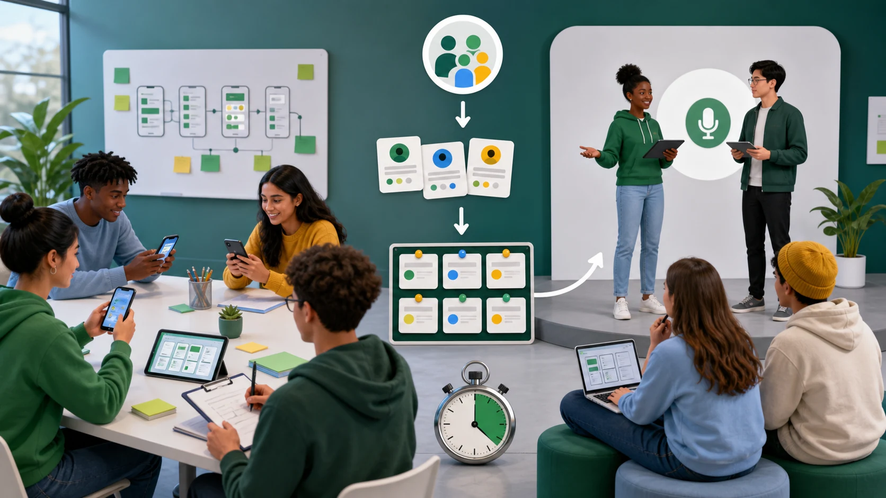
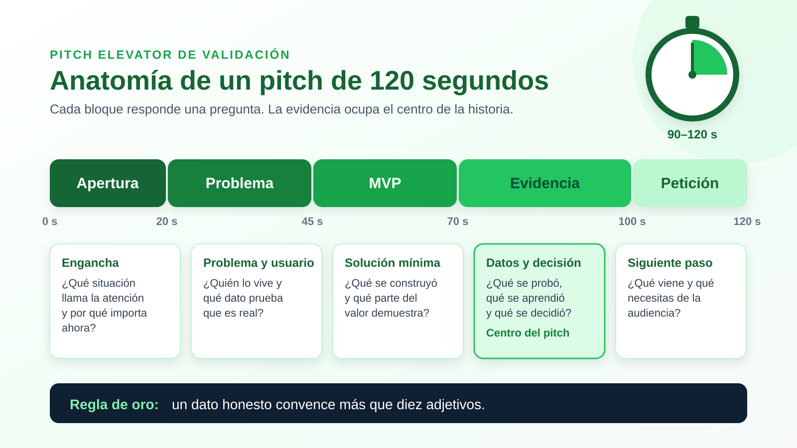

Validación y presentación pitch elevator del MVP
Valida tu MVP con evidencia real y comunica el aprendizaje en un pitch breve, claro y honesto. 🎤
Un MVP (producto mínimo viable) no es una aplicación terminada; es la versión más sencilla, funcional o demostrable que permite aprender si la solución tiene sentido para usuarios reales. Su propósito no es impresionar, sino reducir la incertidumbre con el menor esfuerzo posible.
Validar significa poner a prueba los supuestos más riesgosos del proyecto: ¿el problema existe?, ¿la solución lo resuelve?, ¿las personas estarían dispuestas a usarla o pagar por ella? Cada prueba produce evidencia que alimenta una decisión: perseverar, ajustar o pivotar.
El pitch elevator comunica ese aprendizaje en 90 a 120 segundos: problema, usuario, MVP, evidencia, decisión y siguiente paso. No se trata de memorizar un discurso bonito, sino de demostrar criterio y convencer con datos honestos.
Objetivos de Aprendizaje
- 🧪
Diseñar y ejecutar una validación básica del producto mínimo viable a partir de hipótesis críticas.
- 📊
Analizar evidencias de usuarios y separar datos, interpretación y decisión.
- 🔁
Tomar decisiones de mejora: perseverar, ajustar o pivotar según resultados.
- 🎤
Preparar y ensayar un pitch elevator claro, breve y sustentado en evidencia.
- 🛡️
Reconocer ética, privacidad, accesibilidad y uso responsable de IA durante la validación.
El pitch no maquilla resultados: comunica problema, MVP, evidencia, decisión y siguiente paso. Una presentación sólida muestra qué se aprendió, qué cambió en el producto y por qué la próxima acción tiene sentido.
Haz clic en la imagen para ampliarla.

Mapa mental del temaSelecciona cada rama para descubrir sus ideas clave.
Tema centralValidación y pitch del MVP
Aprender con evidencia y comunicarlo con claridad.
Ciclo construir – medir – aprenderPasa el cursor o toca cada etapa. El ciclo se repite en cada versión del MVP.
Tipos de MVP: elige el adecuadoExplora cada tipo y compara su esfuerzo y lo que permite aprender.
¿En qué consiste?
Una página web sencilla que presenta la propuesta de valor y pide una acción: registrarse, dejar el correo o reservar. Mide interés real antes de construir el producto.
Ejemplo
Un equipo publica la página «Tutorías entre pares en 3 clics» y mide cuántos visitantes de su facultad se inscriben en la lista de espera durante una semana.
¿En qué consiste?
El equipo entrega el servicio de forma manual y personalizada a pocos clientes. El usuario sabe que hay personas detrás. Permite entender a fondo el proceso antes de automatizarlo.
Ejemplo
En lugar de una app, el equipo coordina por WhatsApp las tutorías de 10 estudiantes y registra cada paso, duda y tiempo que toma emparejarlos.
¿En qué consiste?
El usuario interactúa con lo que parece un sistema automático, pero detrás una persona realiza el trabajo. Sirve para validar si la experiencia tiene valor antes de invertir en desarrollo complejo.
Ejemplo
Un «asistente» recomienda tutor en segundos; en realidad, un integrante del equipo revisa la solicitud y responde. Debe informarse con honestidad al terminar la prueba.
¿En qué consiste?
Pantallas enlazadas que simulan la navegación del producto. Los usuarios intentan completar tareas reales mientras el equipo observa dónde dudan o se detienen.
Ejemplo
Con Figma, el equipo enlaza 6 pantallas del flujo de reserva y pide a 6 estudiantes que reserven una tutoría sin ayuda, midiendo el tiempo de cada uno.
¿En qué consiste?
Un video corto muestra cómo funcionaría el producto y qué problema resuelve. Se comparte con el público objetivo y se mide la reacción: registros, comentarios o solicitudes de acceso.
Ejemplo
Un video de 60 segundos explica la plataforma de tutorías; al final invita a inscribirse en el piloto. El equipo compara reproducciones completas con inscripciones.
Construye tu tarjeta de pruebaEscribe tu hipótesis y observa cómo se arma la tarjeta en tiempo real.
Supuesto crítico que, si es falso, cambia el proyecto.
Método, tipo de MVP y participantes.
Dato observable conectado con la hipótesis.
Criterio de éxito definido antes de la prueba.
- Creemos que
- Para verificarlo
- Mediremos
- Criterio de éxito
Métricas accionables o de vanidadSelecciona una métrica para saber si ayuda a tomar decisiones.
Selecciona una métrica
Una métrica accionable se relaciona con una hipótesis y te dice qué hacer después.
Simulador: perseverar, ajustar o pivotarCriterio de éxito definido antes de la prueba: 7 de 10 usuarios completan la tarea.
¿Los usuarios confirmaron que el problema existe?
Mueve el control para simular distintos resultados.
Ordena el aprendizaje para que la audiencia entienda qué se probó, qué resultado apareció y qué decisión sigue. La historia debe ser breve, honesta y fácil de recordar.
Problema
Quién vive la situación, qué dificultad enfrenta y por qué importa resolverla ahora.
MVP
Qué versión mínima se probó, con qué función central y en qué contexto de uso.
Evidencia
Qué dato, comentario o conducta se observó, separando hechos de opiniones del equipo.
Decisión
Perseverar, ajustar o pivotar con fundamento, explicando la razón detrás de la decisión.
Siguiente paso
Qué mejora o prueba viene después y qué evidencia se espera conseguir.
Cada bloque tiene un tiempo y una pregunta que responder. La evidencia ocupa el centro: es lo que distingue un pitch de validación de un discurso de venta.
Haz clic en la infografía para ampliarla.

Ensaya tu pitch con cronómetroPreséntalo en voz alta; el cronómetro marca el bloque en el que deberías estar.
00:00
Apertura0–20 s
Problema20–45 s
MVP45–70 s
Evidencia70–100 s
Petición100–120 s
| Bloque del pitch | Pregunta que responde | Tiempo sugerido |
|---|---|---|
| Apertura | ¿Qué situación llama la atención y por qué debería importar a la audiencia? | 15-20 s |
| Problema y usuario | ¿Quién vive el problema y qué evidencia muestra que es real? | 20-25 s |
| MVP | ¿Qué se construyó, cómo funciona y qué parte del valor demuestra? | 20-25 s |
| Evidencia y decisión | ¿Qué se probó, qué se aprendió, qué limitaciones tuvo y qué se decidió? | 25-30 s |
| Siguiente paso | ¿Qué ajuste o apoyo se necesita para la siguiente versión? | 15-20 s |
En móvil, puedes deslizar esta tabla horizontalmente.
Del discurso genérico al pitch con evidenciaCompara dos versiones del mismo pitch y observa qué cambia.
Guion
«Somos un equipo muy apasionado y creemos que nuestra app va a revolucionar la educación.»«Tiene muchas funciones: chat, calendario, perfiles, pagos y notificaciones.»«A todos los que les mostramos les encantó. ¡Va a ser un éxito!»¿Qué le falta?
- No identifica un usuario ni un problema concreto.
- Enumera funciones en lugar de mostrar valor.
- «Les encantó» es opinión, no evidencia.
- No hay decisión ni petición al final.
Guion
Problema: «El 60 % de 40 estudiantes encuestados de primer semestre no sabe cómo pedir una tutoría.»MVP: «Probamos un prototipo clicable para reservar en 3 pasos.»Evidencia: «4 de 6 reservaron sin ayuda; 2 pidieron ver el perfil del tutor antes de elegir.»Decisión y petición: «Ajustamos el flujo con perfiles y buscamos 20 estudiantes para un piloto de dos semanas.»¿Por qué funciona?
- Usuario y problema concretos, con dato de origen.
- Describe el MVP en una frase.
- Presenta resultados con muestra y matices.
- Cierra con decisión y petición clara.
Validación responsableCuatro principios para obtener evidencia sin afectar a las personas.
ProfundizaDespliega cada tema para ampliar la información.
Pregunta por experiencias pasadas y concretas, no por opiniones sobre el futuro. Una pregunta como «¿usarías esta app?» casi siempre recibe un «sí» amable que no compromete a nada.
Evita
«¿Te gustaría una app para reservar tutorías?»
«¿Cuánto pagarías por esto?»
Prefiere
«Cuéntame la última vez que necesitaste una tutoría. ¿Qué hiciste?»
«¿Qué has intentado para resolverlo?»
Para pruebas de usabilidad cualitativas, entre 5 y 8 participantes revelan la mayoría de los problemas graves de un flujo. Para medir conversión o preferencias se necesitan muestras mayores. Lo esencial es declarar el tamaño de la muestra y no generalizar más allá de lo que los datos permiten.
1
Construir demasiado antes de probar. Un MVP que tarda meses deja de ser mínimo.
2
Definir el criterio de éxito después de ver los datos. Así cualquier resultado parece positivo.
3
Probar solo con amigos y familiares. Su opinión suele ser amable, no representativa.
4
Confundir opiniones con comportamiento. Lo que las personas hacen pesa más que lo que dicen.
Escucha la pregunta completa, agradece y responde en una o dos frases apoyándote en la evidencia. Si no sabes algo, dilo con honestidad e indica cómo lo vas a averiguar: «Aún no lo hemos validado; es nuestra siguiente prueba». Prepara respuestas para las preguntas más probables: competencia, modelo de ingresos, tamaño de la muestra y próximos pasos.
Caso para analizar
La validación mostró que solo 2 de 8 usuarios completaron la tarea principal. ¿Cómo se presenta en el pitch?
Reflexión
Cuestionarios o actividades complementarias
Resuelve las actividades para aplicar lo aprendido sobre validación del MVP y preparación del pitch. ✍️
Actividad 1. Diseña la validación
Convierte una hipótesis en experimento.
Correctas: 0/2
Hipótesis: estudiantes reservarán tutorías si el flujo toma menos de 3 minutos. ¿Cuál es la métrica principal?
¿Cuál criterio de éxito está bien formulado?
Actividad 2. Interpreta la evidencia
Separa datos, interpretación y decisión.
Correctas: 0/2
Los usuarios entienden el MVP, pero no confían en dejar su correo. ¿Qué decisión tiene sentido?
Los entrevistados no reconocen el problema que el equipo quería resolver. ¿Qué conviene hacer?
Actividad 3. Prepara el pitch
Comunica aprendizaje sin esconder límites.
Correctas: 0/2
¿Qué frase fortalece más un pitch?
El pitch dura entre 90 y 120 segundos. ¿Qué conviene evitar?
Evaluación
Responde el quiz de verificación y comprueba qué tan sólido quedó tu aprendizaje.
1. Validar un MVP busca:
2. Una tarjeta de prueba debe incluir:
3. El criterio de éxito de una prueba se define:
4. La evidencia negativa en un pitch debe:
5. Un pitch elevator de validación debe comunicar:
Recursos para profundizar
Consulta estos recursos para ampliar el tema y apoyar el desarrollo del proyecto. Puedes escanear cada código QR desde tu celular.
-
Lean Startup Co.: What is an MVP?
Explicación sobre producto mínimo viable y aprendizaje validado.
Ir al recurso -
Y Combinator: How to Pitch Your Company
Recurso para mejorar la comunicación breve del emprendimiento.
Ir al recurso -
Nielsen Norman Group: Usability Testing 101
Guía para planear y aplicar pruebas de usabilidad con usuarios.
Ir al recurso
Bibliografía
https://www.funcionpublica.gov.co/eva/gestornormativo/norma.php?i=49981
https://leanstartup.co/resources/articles/what-is-an-mvp/
https://www.nngroup.com/articles/usability-testing-101/
https://www.strategyzer.com/library/validate-your-ideas-with-the-test-card
https://www.strategyzer.com/library/capture-customer-insights-and-actions-with-the-learning-card
https://theleanstartup.com/principles
https://www.w3.org/TR/WCAG22/
https://www.ycombinator.com/library/4b-how-to-pitch-your-company
Creado por:
Centro de Innovación en TIC para el apoyo de la Docencia CINTIA
Universidad de Córdoba